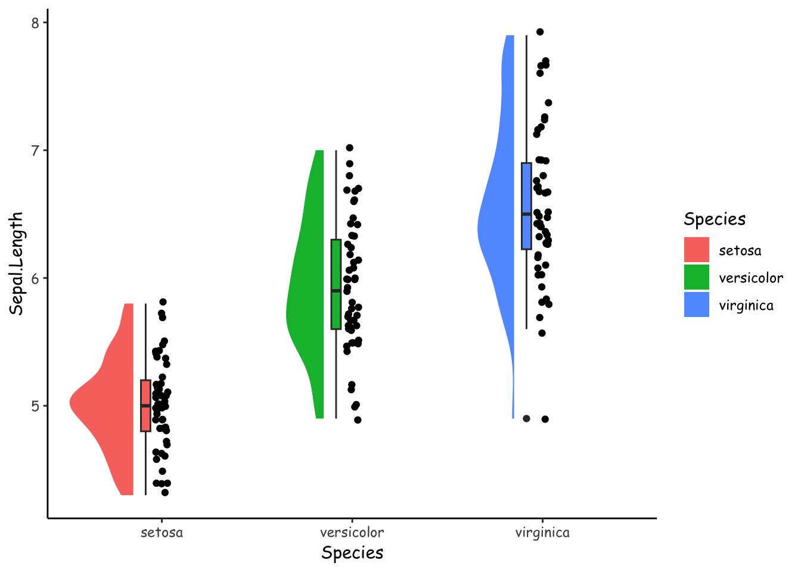
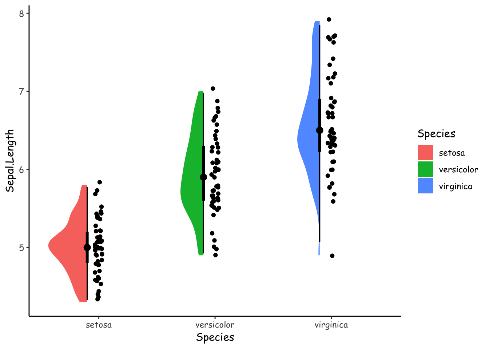
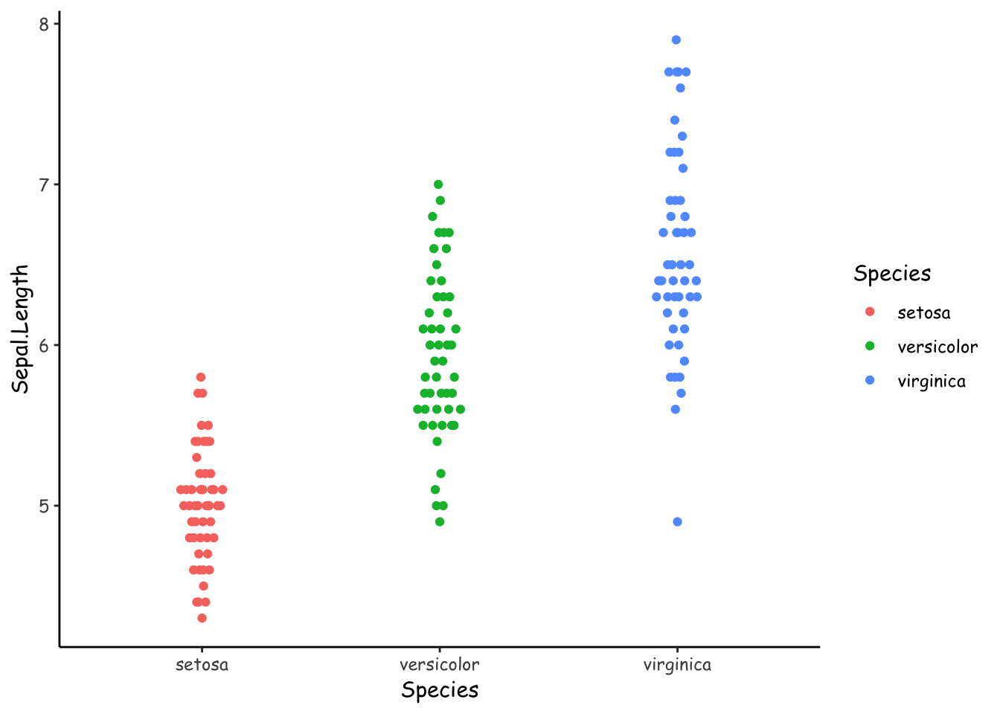
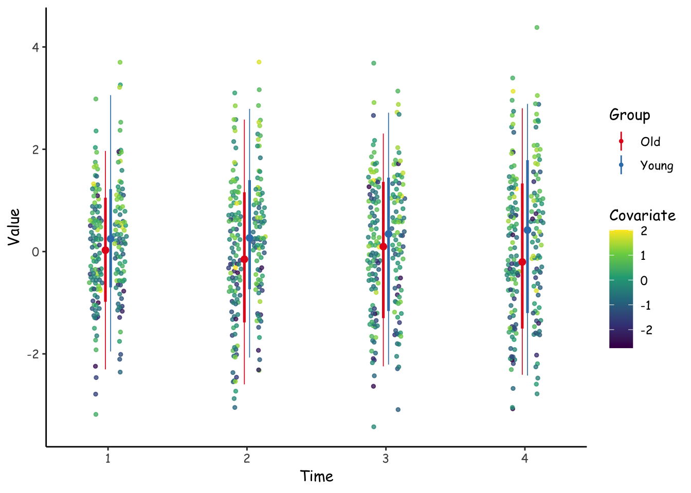

![]()
library(ggrain)
theme_set(
theme_classic(base_family = "Comic Sans MS")
)
ggplot(iris, aes(x = Species, y = Sepal.Length, fill = Species)) +
geom_rain(rain.side = 'l')
ggrain (Judd, van Langen, and Kievit 2022) is an R package that brings extra geoms to ggplot2 to make it easy to create informative plots of your data like Figure 1.
library(ggrain)
theme_set(
theme_classic(base_family = "Comic Sans MS")
)
ggplot(iris, aes(x = Species, y = Sepal.Length, fill = Species)) +
geom_rain(rain.side = 'l')
The hallmark feature of a raincloud plot is that it includes the raw data (points), a summary (boxplot), and a density (shaded curve/area) of your data.
I love raincloud plots. But. I am concerned that they might unnecessarily duplicate features of the data, which might lead to visually overwhelming presentations, and therefore degrade the signal to noise ratio of the plots.
It just might be possible to show these three features—raw data, summary, and densities—in a visually simpler and perhaps more compelling way. In this blog entry, I’ll try two variations on this theme that I hope simplify the presentation without taking information away.
But first, I’ll try to recreate this raincloud plot without the ggrain package. Most of the geoms and stats we need are in the ggdist package (Kay 2022). The end result (Figure 2) looks very similar to the ggrain version, above.
library(tidyverse)
library(ggdist)
iris %>%
ggplot(aes(Species, Sepal.Length, fill = Species)) +
geom_point(position = position_jitter(width = .033)) +
geom_boxplot(position = position_nudge(x = -0.085), width = .05) +
stat_halfeye(
side = "left",
normalize = "none",
width = .3,
position = position_nudge(x = -0.15),
point_interval = NULL
)
OK, so now we have a handle on how to create raincloud plots “manually”.
What I would like to do next is to make the summaries less prominent. I can use stat_halfeye(). Above, I used stat_halfeye(..., point_inteval = NULL) to remove them completely. Here, I will specify some quantiles to show with the width argument. I am not sure if Figure 3 is an improvement.
iris %>%
ggplot(aes(Species, Sepal.Length, fill = Species)) +
geom_point(position = position_jitter(width = .033)) +
stat_halfeye(
side = "left",
normalize = "none",
width = .3,
position = position_nudge(x = -0.1),
.width = c(.5, .99)
)
Maybe all this information can be gleaned from the points alone. To do this, we can jitter the points according to a method specified in the vipor package (Sherrill-Mix and Clarke 2017).
library(ggbeeswarm)
set.seed(1)
iris %>%
ggplot(aes(Species, Sepal.Length, fill = Species, col = Species)) +
geom_point(
position = position_quasirandom(width = .1)
)
Figure 4 arranges the points using one of the offsetting algorithms in vipor, brought to ggplot via the ggbeeswarm package (Clarke and Sherrill-Mix 2017). By default, this is the “quasirandom” method, where “points are distributed within a kernel density estimate of the distribution with offset determined by quasirandom Van der Corput noise”. I can only guess that “the distribution” refers to a gaussian distribution.
It would be really nice if we could choose the x-axis side to which jitter the points. Then we could display two groups side by side. Unfortunately that is not possible.

Let’s try a more complicated example similar to Rogier Kievit’s figure (Figure 5). I first simulate some data with two groups and four timepoints. There’s also some covariate that I’d like to display.
# Data generation
generate_data <- function(seed = NA, n = 200) {
if (!is.na(seed)) set.seed(seed)
dat <- tibble(
id = 1:n,
x = sample(0:1, n, replace = TRUE),
c = rnorm(n),
`1` = rnorm(n, x*.2 + c*.4, 1.1),
`2` = rnorm(n, x*.2 + c*.4, 1.2),
`3` = rnorm(n, x*.2 + c*.4, 1.3),
`4` = rnorm(n, x*.2 + c*.4, 1.4)
) %>%
mutate(x = factor(x, labels = c("Old", "Young"))) %>%
pivot_longer(`1`:`4`) %>%
mutate(name = as.integer(name))
}
dat <- generate_data(9)I’ll try to show this plot with much fewer visual symbols, and hopefully retain most of the information.
library(ggnewscale)
dat %>%
rename(Time = name, Value = value) %>%
ggplot(aes(Time, Value)) +
scale_color_viridis_c(
"Covariate"
) +
geom_point(
aes(col = c, group = x),
size = 1, alpha = .75,
position = position_quasirandom(width = .05, dodge.width = .35)
) +
new_scale_color() +
scale_color_brewer(
"Group",
palette = "Set1"
) +
stat_pointinterval(
aes(color = x),
interval_size_range = c(.3, .9),
position = position_dodge(.075)
)
Hmm. Figure 6 doesn’t quite work visually as I’d like it to. I think it would be really nice if the jittered points were jittered only on their respective sides.
I might come back to this later to see if I can improve on this design.
The takeaway, though, is that the ggrain package provides really nice figures out of the box. If we want to do more complex figures kind of like these, the ggdist and ggbeeswarm plots can create compelling alternatives.
@online{vuorre2022,
author = {Matti Vuorre},
title = {Some Alternatives to Raincloud Plots},
date = {2022-12-06},
url = {https://vuorre.netlify.app/posts/raincloud-plot-alt},
langid = {en}
}